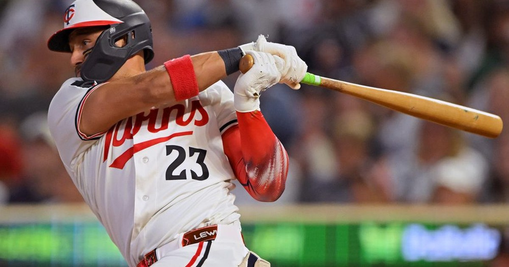

Dodgers acquire Royce Lewis from the Twins for Bobby Miller and catching prospect Francisco Espinoza
The Dodgers acquired infielder Royce Lewis from the Twins on Friday, sending right-hander Bobby Miller and 19-year-old catching prospect Francisco Espinoza to Minnesota.

Disclosure: this post contains affiliate links. I earn a commission on qualifying purchases.
The deal
The Los Angeles Dodgers acquired infielder Royce Lewis from the Minnesota Twins on Friday, the clubs announced. In return, Minnesota gets right-handed pitcher Bobby Miller and minor league catcher Francisco Espinoza.
Jon Heyman of the New York Post first reported that Lewis was headed to Los Angeles, and the Dodgers confirmed the trade on X shortly after. It is the first major move of the offseason for both clubs, and it swaps one former top prospect whose career has stalled for another.
Why the Dodgers did it
Lewis is a buy-low bet on talent that has never been in question. The 27-year-old was the No. 1 overall pick in the 2017 draft, and when healthy he has shown the power and flair that made him that pick. The problem has been the healthy part — he has struggled to stay on the field throughout his career.
What Los Angeles is buying is versatility as much as upside. Lewis played three positions in 2026, logging time at first base, second base, and third base, which gives the Dodgers a right-handed bat they can move around the infield as needed. He is under club control through 2028, so this is not a rental — it is a two-year window to see if a change of scenery and a winning clubhouse unlock the player Minnesota drafted first overall.
What the numbers say
Lewis finished 2026 hitting .227 with 15 home runs, 57 RBI, 51 runs scored, and 16 stolen bases across 125 games. The average was a career low, and the Twins had explored moving him ahead of Friday's deadline to tender him a contract — he was arbitration-eligible for the first time, with MLB Trade Rumors projecting a $5.1 million salary for 2027. The Dodgers will pay a 110 percent luxury tax on him, so he will cost them more than $10 million in actuality.
Miller, also 27, heads the other way after barely pitching in the majors this year. He made three relief appearances for Los Angeles in 2026, going 1-0 with a 3.68 ERA over 7.1 innings with eight strikeouts. That is a long way from his promising rookie season in 2023, when he went 11-4 with a 3.76 ERA, and injuries and inconsistency have kept him from building on it since. Espinoza, a 19-year-old catcher who reached A-ball this past season, is the lottery ticket in the deal.
Why the Twins did it
For Minnesota, this is about the money and the roster crunch as much as the return. Lewis was a non-tender candidate, and moving him now frees up that projected arbitration salary from a payroll the Twins are trying to trim. In exchange they get a 27-year-old arm in Miller who was once one of the best pitching prospects in baseball, plus a teenage catcher to develop. It is not a haul — Twins fans made that clear within minutes of the announcement — but it beats non-tendering Lewis for nothing.
What it means
Both teams are betting on a fresh start fixing what the old one could not. The Dodgers have made a habit of turning other teams' distressed assets into contributors, and Lewis, healthy and in a lineup where he does not have to carry the offense, is exactly the kind of player that model is built for. The Twins, meanwhile, are betting that Miller still has a major league arm in there somewhere. One of these teams is going to look smart by July. The other is going to hear about it.
Gear up: Fanatics